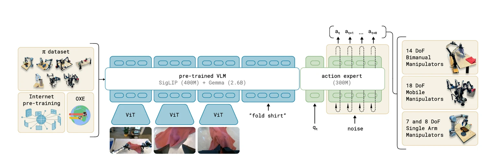

π0模型原理与复现实训
面向 OpenPI、LIBERO 与Alicia-M真实机械臂部署的复现指导
摘要
本章面向希望完成 π0 视觉—语言—动作（Vision-Language-Action, VLA）模型复现的学习者，采用“模型理解—标准基准复现—自定义数据微调—真实机器人部署—结果验证与排错”的操作链组织内容。
在标准复现部分，本章以 LIBERO 为基准，说明数据转换、规范化统计量计算、π0 全参数与 LoRA 配置、训练启动、W&B 监控、Policy Server 部署及仿真闭环评测流程；在自定义数据部分，进一步说明如何将同一套流程迁移到新的机器人和任务。最后给出真实机器人远程推理架构、Action Chunk 执行策略、训练—推理一致性检查以及按“数据字段与动作空间→模型输出→归一化/反归一化→执行端控制→真实表现”组织的故障排查方法。读者完成本章后，应能够独立判断“环境是否复现成功、模型是否训练正常、机器人失败发生在哪一层”。
复现路线图与完成标准
阶段 | 完成标准 | 若失败优先检查 |
|---|---|---|
A 环境复现 | openpi 可导入；预训练模型可完成一次 dummy inference | 依赖、权重、GPU/JAX |
B LIBERO 推理 | 官方/指定 checkpoint 能在 LIBERO 启动闭环评测 | MuJoCo、Policy Server、观测字段 |
C LIBERO 微调 | norm stats 计算成功；训练 loss/grad_norm 正常；可加载中间 checkpoint | 数据转换、config、freeze_filter、显存 |
D 自定义数据微调 | 自定义 LeRobot 数据可被训练脚本读取并生成有效 checkpoint | 字段映射、任务文本、state/action 维度 |
E 真实机器人部署 | 服务器产生动作块；客户端安全、连续执行 | 动作空间、反归一化、控制频率、通信 |
F 结果验证 | 有可重复的成功率/失败类型记录，能定位主要误差来源 | 实验协议、日志与视频对齐 |
π0 模型概述
π0 是 Physical Intelligence 提出的通用机器人视觉—语言—动作模型。其设计目标不是为某个单一任务训练一个专用策略，而是利用视觉语言模型从互联网规模预训练中获得语义知识，再通过大规模、多机器人、多任务操作数据学习连续控制能力。原始论文将 π0 描述为构建在预训练 VLM 之上的 flow-matching VLA，并通过专门的动作专家输出连续低层控制命令。
π0 的基本思想
传统视觉语言模型擅长回答“画面中是什么、用户想做什么”，但输出通常是离散文本 token；机器人控制则要求高频、连续、具有时间相关性的动作。π0 的核心思想是在保留 VLM 视觉—语言理解能力的同时，引入面向机器人状态和连续动作的“动作专家”，并采用流匹配将随机动作逐步变换为可执行动作序列。
(Iₜ, L, qₜ) → π₀ → Aₜ:ₜ₊H₋₁
其中 Iₜ 表示一个或多个相机图像，L 表示自然语言指令，qₜ 表示机器人本体状态，Aₜ:ₜ₊H₋₁ 表示未来 H 个时刻的 Action Chunk。对复现者而言，最重要的不是记住网络参数量，而是建立三层认识：第一层是“语义条件”（图像、语言）；第二层是“机器人条件”（state）；第三层是“连续动作生成”（flow matching + action expert）。
1.2 模型输入与输出
变量 | 含义 | 复现时的检查重点 |
|---|---|---|
Iₜ | 多视角 RGB 图像 | 相机名称、顺序、尺寸、颜色通道、数据类型和数值范围、归一化处理一致 |
L / prompt | 自然语言任务指令 | 训练 task 字段是否进入 prompt；训练/推理用词是否一致 |
qₜ / state | 机器人本体状态 | 维度、关节顺序、夹爪范围、单位、归一化统计量 |
A | 动作序列 | 关节/末端空间，absolute/relative/delta，夹爪定义，动作维度 |
H | Action Horizon | 一次预测多少步；训练、配置和执行策略必须对应 |
1.3 模型整体结构

图 1 π0 核心结构与信息流示意
π0 沿用 PaliGemma 的视觉语言设计，并增加机器人状态、带噪动作及流时间步的输入投影。图像和语言 token 路由到较大的 VLM 主干；机器人 state 与带噪动作 token 路由到较小的动作专家。原始论文中 VLM 基于 Gemma 2B，动作专家宽度更小，参数量约 300M；两组专家主要通过 Transformer 自注意力交互。
原始论文还采用分块因果注意力：图像与语言为第一块，机器人状态为第二块，带噪动作序列为第三块。动作 token 可以读取前面的视觉、语言和状态信息，而视觉语言 token 不反向读取后加入的机器人 token。这样既减少对 VLM 预训练分布的扰动，也使部分键值可以在流匹配采样时缓存。对复现而言，这解释了为什么“视觉语言主干正常”并不等于“动作输出正确”：动作专家、state 投影、动作归一化和采样过程仍然可能单独出错。
1.4 流匹配动作生成原理
训练时，设真实动作块为 A¹，随机噪声为 A⁰（通常由高斯分布采样），在随机时间 τ∈[0,1] 上构造中间动作：
Aᵗᵃᵘ = (1 − τ)A⁰ + τA¹
在线性路径下，目标速度方向可写为：
v* = A¹ − A⁰
模型根据当前视觉、语言、机器人状态、中间动作与时间 τ 预测速度场 vθ，并最小化预测速度和目标速度的差异：
L_FM = E[ || vθ(Aᵗᵃᵘ, τ, Iₜ, L, qₜ) − (A¹ − A⁰) ||² ]
推理时从随机动作开始，反复调用动作专家并用数值积分更新动作状态，最终得到动作块。直观理解是：模型不是“一次直接回归正确动作”，而是学习“当前这段带噪动作应该朝哪个方向修正”。因此推理涉及多次网络前向，推理步数会同时影响延迟和动作质量。
π0 复现环境与数据准备
这一节的目标是把“模型能不能跑”和“数据对不对”分开验证。建议先完成官方环境和预训练权重推理，再接入 LIBERO 或自定义数据。这样当后续训练失败时，可以排除大量基础依赖问题。
软件与硬件环境配置
截至 2026 年 8 月，OpenPI 官方仓库仍以 Linux/NVIDIA GPU 为主要运行环境，README 标注的单卡显存参考为：推理大于 8 GB、LoRA 微调大于 22.5 GB、全参数微调大于 70 GB；官方测试系统为 Ubuntu 22.04。
OpenPI 安装与预训练模型准备
官方推荐使用带子模块的方式克隆仓库，并通过 uv 安装依赖。先完成以下基础安装：
git clone --recurse-submodules git@github.com:Physical-Intelligence/openpi.git
cd openpi
# 若已经克隆过但没有子模块
git submodule update --init --recursive
GIT_LFS_SKIP_SMUDGE=1 uv sync
GIT_LFS_SKIP_SMUDGE=1 uv pip install -e .π0 基础权重可由 OpenPI 自动从官方资产位置下载并缓存。当前仓库列出的 π0 基础 checkpoint 为 gs://openpi-assets/checkpoints/pi0_base。为保证复现可追踪，建议在第一次训练前记录：代码 commit、config 名称、权重来源、数据集版本、GPU 型号和 W&B run id。
数据集格式与字段说明
OpenPI 的常规微调示例使用 LeRobot 数据格式，并通过 DataConfig 完成原始字段到模型输入的映射。对任何自定义数据集，最低需要明确四类信息：视觉观测、机器人状态、动作和任务语言。
数据项 | 常见字段示例 | 必须确认 |
|---|---|---|
视觉 | observation.images.* | 相机名称是否与 DataConfig 的 repack/transforms 对齐 |
状态 | observation.state | 维度、单位、关节顺序、夹爪状态 |
动作 | action | 动作空间、维度、是否 delta/absolute、执行语义 |
语言 | task → prompt | 每个 episode/task 标签是否正确；prompt_from_task 是否开启 |
元数据 | episode/frame/timestamp/fps | 轨迹边界、帧率、视频与状态同步 |
数据检查应优先做“结构检查”而非立刻训练。建议随机抽取若干 episode，逐帧查看图像、state、action、task；再计算每维动作的最小值、最大值、分位数和相邻帧差值。若动作字段本身错误，任何学习率调参都无法修复。
状态、动作与归一化处理
真实机器人复现中最常见的灾难性错误来自动作定义不一致。建议在训练前用一张“动作契约表”固定以下内容，并在推理客户端再次逐项核对。
检查项 | 训练数据 | 模型输出/服务端 | 机器人执行端 |
|---|---|---|---|
动作空间 | 关节 / 末端 | 必须与训练 config 一致 | 控制接口接受哪一种 |
表示方式 | absolute / relative / delta | 是否有额外 delta transform | 是否再次累加/转换 |
维度与顺序 | 例如 7 维 | padding 前后真实有效维度 | 电机/关节映射顺序 |
夹爪 | 范围与开合方向 | 归一化后的语义 | 实际控制范围 |
归一化 | 训练 norm_stats | 服务端归一化/反归一化位置 | 不要重复反归一化 |
时间 | 数据 FPS / chunk | action_horizon | 客户端执行频率与每次执行步数 |
OpenPI 在正式训练前要求计算 normalization statistics。官方 README 的通用流程是用训练 config 运行 scripts/compute_norm_stats.py，然后再启动训练。 如果是在预训练中已经出现过的机器人平台上继续微调，官方也提供复用预训练 norm stats 的机制；是否复用取决于动作定义是否完全一致。
uv run scripts/compute_norm_stats.py --config-name <your_config_name>LIBERO 基准复现
LIBERO 的作用是提供一个可控、可重复、与真实机器人硬件无关的标准测试点。完成 LIBERO 复现后，可以确认 OpenPI 环境、模型加载、观测构造、Action Chunk 和闭环推理链基本正常；若之后真实机器人失败，问题范围就更集中在自定义数据、动作转换和硬件执行。
LIBERO 基准与任务体系
LIBERO 是面向机器人操作知识迁移和终身学习的基准，共构建 130 个任务，包含 LIBERO-Spatial、LIBERO-Object、LIBERO-Goal 和 LIBERO-10 等任务套件。
套件 | 主要变化因素 | 复现时关注 |
|---|---|---|
LIBERO-Spatial | 空间关系变化 | 模型是否理解位置/关系条件 |
LIBERO-Object | 操作对象变化 | 视觉目标识别与对象条件 |
LIBERO-Goal | 目标语义变化 | 语言指令与任务目标 |
LIBERO-10 | 综合任务子集 | 多任务总体泛化与闭环成功率 |
LIBERO 环境与数据集配置
OpenPI 官方 LIBERO 示例依赖仓库子模块，并推荐通过 Docker 运行评测，因为 Docker 能统一 MuJoCo、OpenGL/EGL 和客户端环境，也可以使用独立的Conda环境运行LIBERO仿真客户端，同时在OpenPI环境中运行Policy Server。
# 确保子模块完整
git submodule update --init --recursive
# Docker 方式（官方推荐）
sudo xhost +local:docker
SERVER_ARGS="--env LIBERO" docker compose -f examples/libero/compose.yml up --build
# 若 EGL 报错，可尝试 GLX
MUJOCO_GL=glx SERVER_ARGS="--env LIBERO" docker compose -f examples/libero/compose.yml up --build如果目的是训练 π0，而不是只运行现成 checkpoint，可以直接使用 OpenPI 提供的预转换数据集 physical-intelligence/libero；也可以把原始 LIBERO 数据转换为 LeRobot 格式，以学习自定义数据转换流程：
uv run examples/libero/convert_libero_data_to_lerobot.py --data_dir /path/to/your/libero/dataLIBERO 数据预处理
当前 OpenPI 中的 LeRobotLiberoDataConfig 负责将 LeRobot 原始字段转换为 π0 所需的输入/输出，并可配置 prompt_from_task 和额外的 delta action 变换。官方 π0 LIBERO config 使用 prompt_from_task=True，并在 π0 示例中启用 extra_delta_transform=True。
repo_id="physical-intelligence/libero",
base_config=DataConfig(prompt_from_task=True),
extra_delta_transform=True,
)
这里的 extra_delta_transform 是“数据适配的一部分”，不是所有机器人都应开启。迁移到自定义数据时必须先回答：数据中的 action 已经是什么定义？若已经是期望的 delta action，再额外做一次差分会导致动作幅度和语义错误。完成上述数据变换后，在正式训练前应进行以下数据验收检查：
1. 用数据可视化或统计脚本确认输入图像、state、action 和 task 可以逐 episode 对齐。
2. 确认 action_dim 与 config 真实有效维度一致；若模型有 padding 维度，区分“模型最大维度”和“机器人实际维度”。
3. 计算 norm stats，并检查每个动作维度的 q01/q99 或均值方差是否合理。
4. 随机抽样训练 batch，确认 prompt 不是空字符串，Action Chunk 不跨越错误 episode 边界。
π0 在 LIBERO 上的微调配置
OpenPI 当前提供 π0 全参数和低显存 LoRA 两类 LIBERO 示例。用于复现 LoRA 时，可从官方 pi0_libero_low_mem_finetune 配置起步；该配置使用 π0 base、gemma_2b_lora 与 gemma_300m_lora，并通过 get_freeze_filter() 冻结非 LoRA 权重，同时关闭 EMA。
name="pi0_libero_low_mem_finetune",
model=Pi0Config(
paligemma_variant="gemma_2b_lora",
action_expert_variant="gemma_300m_lora",
),
data=LeRobotLiberoDataConfig(
repo_id="physical-intelligence/libero",
base_config=DataConfig(prompt_from_task=True),
extra_delta_transform=True,
),
weight_loader=CheckpointWeightLoader(
"gs://openpi-assets/checkpoints/pi0_base/params"
),
num_train_steps=30_000,
freeze_filter=Pi0Config(
paligemma_variant="gemma_2b_lora",
action_expert_variant="gemma_300m_lora",
).get_freeze_filter(),
ema_decay=None,
)
以上代码是“理解结构的简化摘录”，实际使用时应以当前 src/openpi/training/config.py 为准。复现的第一轮建议尽量不修改官方 config；只有官方基线跑通后，再针对显存、数据规模和任务特性调整 batch size、学习率和训练步数。
LIBERO 模型训练与监控
训练前先计算 norm stats，再启动训练。以下命令使用 π0 LoRA 示例配置：
uv run scripts/compute_norm_stats.py --config-name pi0_libero_low_mem_finetune
XLA_PYTHON_CLIENT_MEM_FRACTION=0.9 uv run scripts/train.py pi0_libero_low_mem_finetune --exp-name=pi0_libero_lora_repro --overwriteOpenPI 会把训练日志输出到终端并把 checkpoint 保存到 checkpoints 目录；启用 W&B 后可查看 loss、grad_norm、param_norm、learning rate 与 GPU 系统指标。判断训练是否正常时，重点看趋势而不是某个孤立数值。
曲线 | 正常现象 | 异常提示 |
|---|---|---|
loss | 总体下降，后期波动范围缩小 | 持续上升、NaN、长期不降 |
grad_norm | 早期较大，后期趋于稳定 | 频繁巨大尖峰或长期接近 0 |
param_norm | LoRA 下通常缓慢变化 | 突然跳变、持续快速增长 |
learning rate | 符合 warmup/decay 预设 | 曲线和 config 不一致 |
GPU utilization | 训练卡大部分时间有负载 | 长期空闲说明数据或同步等待 |
LIBERO 推理与闭环控制
训练得到 checkpoint 后，可先单独启动 policy server，再由 LIBERO 客户端循环发送观测。服务器默认端口为 8000。
uv run scripts/serve_policy.py policy:checkpoint --policy.config=pi0_libero_low_mem_finetune --policy.dir=checkpoints/pi0_libero_low_mem_finetune/pi0_libero_lora_repro/<checkpoint_step>对于 LIBERO 的正式评测，官方更推荐 Docker 化工作流，因为它能同时处理模型服务器和仿真客户端。若加载自定义 checkpoint，可通过 SERVER_ARGS 指定 config 和目录；任务套件通过 CLIENT_ARGS 选择。
export SERVER_ARGS="--env LIBERO policy:checkpoint --policy.config pi0_libero_low_mem_finetune --policy.dir ./my_custom_checkpoint"
export CLIENT_ARGS="--args.task-suite-name libero_10"
docker compose -f examples/libero/compose.yml up --build闭环执行的核心不是“模型一次把整条轨迹生成完”，而是周期性获取新观测、生成 Action Chunk、执行其中若干步，再重新观测。实际执行多少步取决于环境/客户端设计；若执行过多，策略对新视觉信息的响应会变慢，若每步都重新推理，则计算和通信负担增大。
LIBERO 评测与结果复现
LIBERO 的主要指标是任务成功率。复现时至少记录每个 task suite 的成功次数、总 rollout 数、平均成功率、失败任务列表和 checkpoint step。若改变随机种子、任务套件、评测 episode 数或模型版本，应视为不同实验。
记录项 | 示例格式 |
|---|---|
代码版本 | openpi commit: <hash> |
模型 config | pi0_libero_low_mem_finetune |
checkpoint | step 10000 / 20000 / 30000 |
任务套件 | libero_spatial / object / goal / libero_10 |
随机种子 | seed = ... |
成功率 | success / total |
失败摘要 | 目标选择失败、抓取失败、执行超时等 |
当前 OpenPI LIBERO README 给出的公开参考结果为 π0.5 @ 30k：Spatial 98.8、Object 98.2、Goal 98.0、LIBERO-10 92.4，平均 96.85。该结果可用于验证“官方 Docker + checkpoint + 评测脚本”是否工作，但不能作为 π0 模型的直接复现目标。对 π0 应比较相同版本、相同 config、相同 checkpoint 来源下的结果。
自定义数据 π0 LoRA 微调
数据契约与目录约定
类别 | 通用表示 | 作用 |
|---|---|---|
官方源码 | src/openpi/ | 模型、数据加载、变换、训练与服务实现 |
官方脚本 | scripts/train.py；scripts/compute_norm_stats.py；scripts/serve_policy.py | OpenPI 标准训练、统计量和服务入口 |
轻量客户端 | packages/openpi-client/ | WebSocket/MessagePack 客户端，不加载 GPU 模型 |
训练输出 | checkpoints/<CONFIG_NAME>/<EXPERIMENT_NAME>/<STEP>/ | Orbax Checkpoint；禁止写死某次实验的绝对路径 |
数据集 | <DATASET_ROOT>/ | LeRobot 数据，独立于 OpenPI 仓库 |
基础参数 | <PI0_BASE_PARAMS>/ | 官方 π0 base 的 params 目录 |
训练字段 | 实测契约 | 说明 |
observation.images.cam_head | RGB，固定相机 | 对应 observation/image |
observation.images.cam_wrist | RGB，腕部相机 | 对应 observation/wrist_image |
observation.state | shape=(7,) | 前 6 维为关节弧度，第 7 维为夹爪绝对位置 |
actions | shape=(7,) | 绝对关节目标 + 夹爪绝对目标，不做 delta action |
task / prompt | 任务文本 | 训练与推理必须保持语义一致 |
先固定数据字段、单位和相机语义，再开始计算统计量或训练。数据可以放在仓库外部；OpenPI 代码、训练产物和数据集不要混写到同一目录。以下路径均相对 <OPENPI_ROOT>，只有 <DATASET_ROOT> 与 <PI0_BASE_PARAMS> 是外部资源。
数据适配、Prompt 与动作契约
自定义数据复现前，必须把“数据集字段 → OpenPI 输入字典 → 模型内部表示 → Policy 输出 → 机器人执行”写成唯一的数据契约。多任务训练尤其要锁死 prompt 链：LeRobot 的 task 必须通过 prompt_from_task=True 或等价的自定义 Repack/transform 进入 prompt；训练前随机检查多个 batch，确认 prompt 非空、不同任务的文本可区分，并与图像、state、action 属于同一 episode。
base_config=DataConfig(prompt_from_task=True)
# 冒烟检查（伪代码）
assert sample["prompt"] is not None and len(sample["prompt"]) > 0
print(sample["prompt"], sample["state"].shape, sample["actions"].shape)动作契约同时需要明确：①关节空间还是末端空间；②absolute/relative/delta；③机器人有效维度与模型 action_dim；④夹爪范围和开合方向；⑤单位和关节顺序；⑥训练/推理是否应用 DeltaActions、AbsoluteActions、Normalize/Unnormalize。只要其中一项在训练端与执行端不一致，即使 loss 很低也可能产生大幅跳变、抖动或目标错误。
归一化统计与 LoRA 配置
归一化统计量必须由最终训练数据和最终字段顺序计算。实测脚本默认随机抽取最多 2,000 帧，以 batch size 8 统计 state 与 actions，并写入 assets/<CONFIG_NAME>/<ASSET_ID>/norm_stats.json。若数据分布复杂，可把 max-frames 设为 0 统计全量。
cd <OPENPI_ROOT>
export OPENPI_ROOT="$PWD"
export ALICIA_DATASET_ROOT="<DATASET_ROOT>"
export PI0_BASE_PARAMS="<PI0_BASE_PARAMS>"
.venv/bin/python scripts/train_pi0_lora_alicia.py --compute-norm-stats --max-frames 2000
test -f assets/<CONFIG_NAME>/<ASSET_ID>/norm_stats.json
参数 | 实测值 | 复现含义 |
|---|---|---|
基础模型 | π0 base | 从官方 base params 初始化 |
PaliGemma | gemma_2b_lora | 视觉语言主干使用 LoRA |
Action Expert | gemma_300m_lora | 动作专家使用 LoRA |
action horizon | 50 | 每次预测 50×7 动作；执行端可只消费前 N 步 |
freeze_filter | 由相同 Pi0Config 生成 | 冻结非 LoRA 参数，必须与模型 variant 一致 |
delta action | 关闭 | Alicia-M 数据使用绝对关节和夹爪目标 |
EMA | 关闭 | 与实测配置保持一致 |
启动训练与多 GPU 配置
OpenPI TrainConfig.batch_size 表示全局 batch size。多 GPU 时必须能被设备数整除：例如全局 batch_size=16、2 张 GPU 时，每卡有效 batch 为 8；若只使用 1 张 GPU，则每卡 batch 为 16。本文训练示例采用 2 张 GPU，因此同时暴露两张设备并将自定义入口的 fsdp_devices 设置为 2。
cd <OPENPI_ROOT>
mkdir -p logs
CUDA_VISIBLE_DEVICES=<GPU_ID_0>,<GPU_ID_1> \
nohup .venv/bin/python scripts/train_pi0_lora_alicia.py \
--fsdp_devices 2 \
--exp_name <EXPERIMENT_NAME_2GPU> \
> logs/<TRAIN_LOG>.log 2>&1 &
训练参数 | 推荐值(非最优) | 注意事项 |
|---|---|---|
batch_size | 16（全局） | OpenPI TrainConfig 定义为 global batch；2 GPU 时每卡 8，1 GPU 时每卡 16 |
devices / fsdp_devices | 2 | 本手册实测双 GPU；batch_size 必须能被设备数整除 |
num_train_steps | 25,000 | JAX 训练 step 从 0 计数，最终 checkpoint 通常为 24,999 |
save_interval | 5,000 | 建议保留 5k / 10k / 15k / 20k / 24,999，真实效果对比后选部署版本 |
optimizer | AdamW | 显式记录实际 b1/b2/eps/weight_decay；当前 OpenPI 默认 b1=0.9, b2=0.95, eps=1e-8, weight_decay=1e-10 |
peak_lr | 1e-5 | 本手册小数据 LoRA 的保守复现配置； |
warmup_steps | 500 | 前 500 step 线性 warmup 到 peak_lr |
decay_steps | 25,000 | 整个 schedule 的目标终点；包含 warmup，不是 warmup 后再额外衰减 25k |
decay_lr | 1e-6 | 训练末期最低学习率 |
clip_gradient_norm | 1.0 | 与当前 OpenPI AdamW 默认梯度裁剪一致 |
EMA | 关闭 | LoRA 微调保持 ema_decay=None |
log_interval | 100 | 记录 loss、grad_norm、param_norm；learning_rate 若需要必须显式 log |
resume / overwrite | 新训练：False / True；续训：True / False | 续训必须恢复 train_state（optimizer + step），禁止仅加载 params 后重新 warmup |
W&B | 开启 | 记录 config、loss/grad_norm/param_norm 与系统指标；JAX 默认入口不保证有 learning_rate 曲线 |
训练监控与实测结果
本实验使用 Weights & Biases（W&B）记录训练配置、训练曲线和GPU运行状态。训练服务器通过W&B SDK上传监控数据，实验人员可在浏览器中远程查看，无需持续通过SSH执行日志命令。
监控项 | 观察重点 | 异常表现 |
|---|---|---|
loss | 整体是否下降并逐渐稳定 | 持续上升、剧烈振荡或出现NaN |
grad_norm | 梯度是否处于稳定范围 | 突然放大、持续为零或出现NaN |
param_norm | 模型参数规模是否稳定 | 突然跳变或持续异常增长 |
step | 训练是否持续推进 | 长时间停留在同一步 |
GPU利用率 | 计算资源是否被有效使用 | 长期接近零，可能是数据加载或进程异常 |
GPU显存 | 是否接近显存上限 | 持续满载并发生OOM |
camera_views | 两路相机及预处理是否正确 | 视角接反、黑屏、颜色异常或尺寸错误 |
训练配置 | batch、步数、FSDP和数据配置是否正确 | 页面配置与预期实验不一致 |
Checkpoint 校验、选择与续训
推理前应检查目录结构，而不是只检查文件夹是否存在。Orbax Checkpoint 可能把数组分散在多个元数据与数据文件中，不能手工复制单个 manifest 代替整个目录。
cd <OPENPI_ROOT>
CKPT="checkpoints/<CONFIG_NAME>/<EXPERIMENT_NAME>/<STEP>"
test -d "$CKPT/params"
test -d "$CKPT/train_state"
test -f "$CKPT/assets/<ASSET_ID>/norm_stats.json"
test -f "$CKPT/_CHECKPOINT_METADATA"
du -sh "$CKPT"
π0 真实机器人部署
架构、占位符与所需文件
占位符 | 填写内容 |
|---|---|
<TRAIN_SERVER_HOST> | 训练服务器主机名或地址 |
<SSH_PORT> | SSH 监听端口 |
<POLICY_SERVER_HOST> | 客户端可访问的策略服务器地址 |
<POLICY_SERVER_PORT> | 策略 WebSocket 端口 |
<ROBOT_SERIAL_PORT> | Alicia-M 串口 |
<FIXED_CAMERA_SERIAL> | Orbbec 固定相机序列号 |
<WRIST_CAMERA_SERIAL> | RealSense 腕部相机序列号 |
<LOCAL_PROXY_PORT> | 本机代理端口（如有） |
服务端加载模型、归一化统计量并执行 JAX 推理；Windows 客户端采集 Orbbec Gemini 336L 固定视角、Intel RealSense 腕部视角和 Alicia-M 关节状态，通过 OpenPI WebSocket 协议发送 observation，再对返回动作做安全限制和 PV 控制。
服务端模型加载与启动
服务端负责加载训练完成的checkpoint、构建推理策略，并通过WebSocket向客户端提供动作预测服务。训练配置、数据变换、归一化统计量和模型结构必须与checkpoint一致。
如果训练配置已经注册到当前OpenPI版本的全局配置机制中，优先使用官方服务脚本：
cd <OPENPI_ROOT>
uv run scripts/serve_policy.py \
policy:checkpoint \
--policy.config=<CONFIG_NAME> \
--policy.dir=checkpoints/<CONFIG_NAME>/<EXPERIMENT_NAME>/<STEP>
Windows 客户端与双相机输入
Windows 客户端使用独立 Conda 环境，安装 Alicia-M SDK、Orbbec SDK v2、Intel RealSense SDK、OpenPI 轻量客户端及脚本依赖。
conda activate <CLIENT_ENV>
chcp 65001
$env:PYTHONUTF8 = "1"
$env:NO_PROXY = "localhost,127.0.0.1,<POLICY_SERVER_HOST>"
$env:no_proxy = $env:NO_PROXY
Test-NetConnection <POLICY_SERVER_HOST> -Port <POLICY_SERVER_PORT>
设备 | 通用参数 | 核验 |
|---|---|---|
Alicia-M | <ROBOT_SERIAL_PORT> | 串口可打开、固件模式正确、状态连续更新 |
固定相机 | Orbbec Gemini 336L；<FIXED_CAMERA_SERIAL> | 原生 SDK 返回任务视角 RGB |
腕部相机 | Intel RealSense；<WRIST_CAMERA_SERIAL> | pyrealsense2 返回腕部 RGB |
图像 | 640×480 @ 30 FPS | 转换为 RGB，再由 OpenPI resize/pad 到模型输入 |
状态 | shape=(7,) | 单位、关节顺序和夹爪范围与训练一致 |
分阶段联调与安全执行
阶段 | 客户端模式 | 通过标准 |
|---|---|---|
网络与元数据 | 连接服务，不连接机器人 | 能读取 action_dim、单位和观测字段 |
离线 probe | 用录制帧推理 | actions.shape与目标一致，数值有限且范围合理 |
真机 dry-run | 连接机器人与双相机，不加 --execute | 观测正确、只打印目标不运动 |
单步执行 | chunks=1，actions-per-chunk=1 | 方向、单位、顺序、限幅正确 |
短动作块 | 逐步增加 N | commanded 与 measured 跟踪，急停有效 |
连续闭环 | chunks=0 | 持续重规划并完成任务，人工全程监护 |
python <CLIENT_PROJECT_ROOT>/scripts/alicia_openpi_client.py `
--host <POLICY_SERVER_HOST> --port <POLICY_SERVER_PORT> `
--prompt "grab and place" `
robot --robot-port <ROBOT_SERIAL_PORT> `
--camera-backend orbbec-realsense `
--orbbec-serial <FIXED_CAMERA_SERIAL> `
--realsense-serial <WRIST_CAMERA_SERIAL> `
--camera-width 640 --camera-height 480 --fps 30 `
--robot-speed 20 --robot-control-mode pv `
--max-joint-step-deg 1.5 --max-gripper-step 45 `
--chunks 1 --actions-per-chunk 1 --action-hold-sec 0.04 `
--execute
复现结果验证与故障排查
复现的目标不是“训练命令成功退出”，而是形成可重复的证据链。建议把验证分为标准仿真、离线模型输出、真实机器人三个层次，并用同一套日志关联。
LIBERO 复现结果验证
LIBERO 结果用于证明标准化闭环链条可运行。至少报告：代码 commit、config、checkpoint、task suite、评测次数、随机种子、成功率和失败类型。若与官方或他人结果差异很大，先确认评测脚本、任务 suite、checkpoint 和环境版本完全相同，再讨论模型本身。
若只想验证环境，可先使用官方提供的 π0.5-LIBERO checkpoint 运行 Docker 流程，确认仿真与服务器通信；随后再切换到 π0 checkpoint 进行本章的 π0 复现。这样可以把“LIBERO 环境问题”和“π0 训练问题”分离。
Alicia-M 自定义模型实测验证
验证顺序为离线 probe、真机 dry-run、单动作、短动作块、连续闭环。
训练—推理一致性检查
项目 | 训练定义 | 推理/执行要求 |
|---|---|---|
固定视觉 | cam_head | Orbbec 任务视角 → observation/image |
腕部视觉 | cam_wrist | RealSense 腕部视角 → observation/wrist_image |
状态 | 6 关节弧度 + 夹爪 | 顺序、单位、符号和范围完全一致 |
动作 | 7 维绝对目标 | 不得重复反归一化或误作 delta |
任务文本 | 数据集 task | prompt 语义保持一致 |
时序 | 30 FPS，horizon=50 | action-hold 接近采集周期，按 chunk 重规划 |
归一化 | Checkpoint assets 中的 norm_stats | 服务必须加载同一份资产 |
本章小结
π0 的复现应被视为一条端到端工程链，而不是单独的“训练脚本复现”。模型层面需要理解 VLM 主干、动作专家、Action Chunk 和流匹配；工程层面需要保证 OpenPI 版本、数据字段、动作空间、norm stats、训练 config、Policy Server 和客户端控制协议一致。LIBERO 为这条链提供标准化中间检查点：先通过标准仿真验证模型与软件，再迁移到自定义数据和真实机器人，可显著降低排错复杂度。
最终的复现成功应满足三个条件：其一，训练过程可重现，配置、数据版本、日志和 checkpoint 可追溯；其二，推理链可重现，同一 observation 能稳定得到格式与数值合理的 Action Chunk；其三，任务效果可重现，在固定实验协议下获得稳定的成功率并能解释主要失败类型。只有同时满足这三点，才能从“代码能跑”升级为“系统被真正复现”。